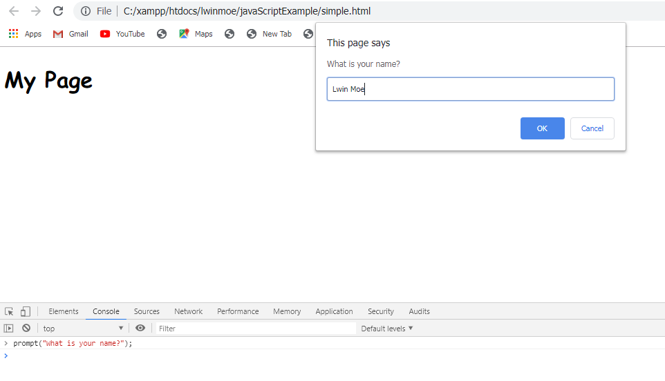
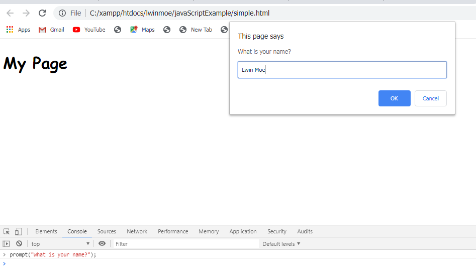
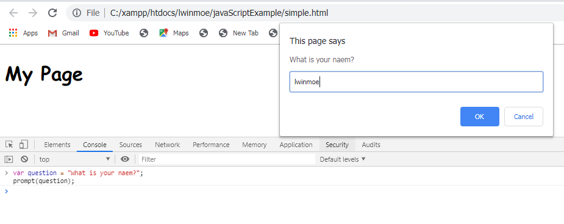
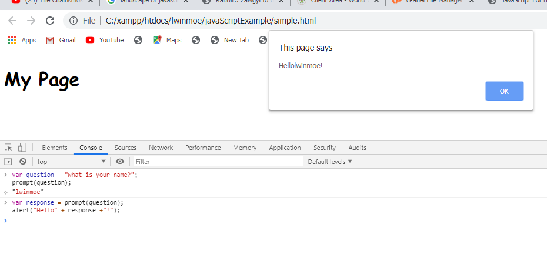
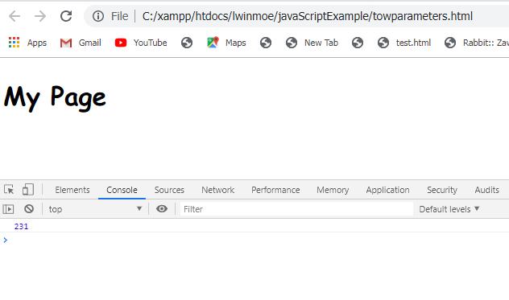
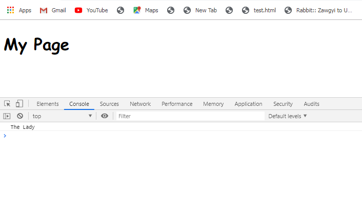
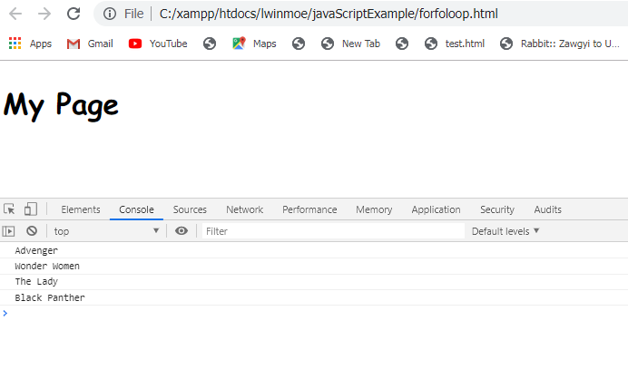
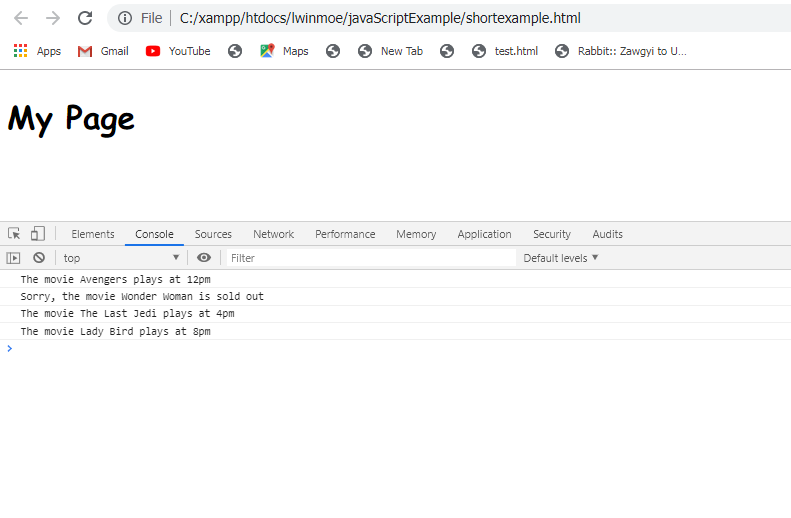

JavaScript ဟာဆိုရင် ကမ္ဘာမှာ most popular and versatile programming language တစ်ခုပဲဖြစ်ပါတယ်။ သူ့ကို စလုပ်ဆောင်လုပ်တဲ့ နေရာမှာ quick and easy ဖြစ်ပါတယ်။ ဘာလို့လဲဆိုတော့ သူဟာ browser ထဲမှာ မှန်မှန်ကန်ကန် built လုပ်ပေးတဲ့အတွက်ကြောင့်ပဲဖြစ်ပါတယ်။ သူ့မှာရိုးရှင်းတဲ့ straight forward syntax တစ်ခုရှိပါတယ်။ နောက် JavaScript မှာ growing vibrant support community လည်းရှိပါတယ်။ အဲ့ community မှာဆိုရင် built လုပ်ထားတဲ့ ကျွန်တော်တို့ရဲ့ job ကို easier ဖြစ်အောင်ကူညီပေးနိုင်တဲ့ lots of tools တွေရှိပါတယ်။ JavaScript ရဲ့ concepts တွေဟာ အခြားဘယ် language ကိုမဆို learn လုပ်တဲ့နေရာမှာ apply လုပ်နိုင်ပါတယ်။
အခု some JavaScript ကို ရေးကြည့်ရအောင် ၊ common data types, variables, arrays, objects, loops, functions, and more စတဲ့ JavaScript development တွေကို စပြီးတော့လုပ်ဆောင်တဲ့နေရာမှာလိုအပ်တဲ့ parts တွေကို ပြောပြပေးသွားမှာဖြစ်ပါတယ်။ JavaScript ကို စပြီးတော့ browser မှာ အသုံးပြုလာတာဟာ 1995 က စပြီးတော့ အသုံးပြုတာဖြစ်ပါတယ်။ အခုစပြီးပြောပြပေးမှာကတော့ browser ရဲ့ console ကနေပြီးတော့ JavaScript ကို run လို့ရပါတယ်။ console ကို browser ရဲ့ developer tools မှာသွားပြီးတော့ ရှာလို့ရပါတယ်။ Console မှာဆိုရင် JavaScript code ကို ရေးပြီးတော့ run နိုင်ပါတယ်။ JavaScript ဟာဆိုရင် number of different data types တွေကို support လုပ်ပေးပါတယ်။ အခု example မှာဆိုရင် common data types တွေဖြစ်တဲ့ numbers နဲ့ strings တွေကို run ထားတာပဲဖြစ်ပါတယ်။ JavaScript မှာဆိုရင် numbers တွေကို adding, subtracting, computing total costs တွေလို calculations တွေကို လုပ်ဆောင်တဲ့အခါမှာ အသုံးပြုပါတယ်။ Numbers တွေဟာ whole numbers or decimal points တွေနဲ့ ဖြစ်နိုင်ပါတယ်။ JavaScript ဟာ နောက် addition, subtraction, multiplication, and division တို့လို common mathematical calculations တွေကို လုပ်ဆောင်ဖို့ရန်အတွက် arithmetic operators တွေကိုလည်း provides လုပ်ပေးပါတယ်။ နောက် common data type တစ်ခုဖြစ်တဲ့ string ဖြစ်ပါတယ်။ Strings ကို words, sentences, and other text တွေအတွက် program ထဲမှာအသုံးပြုကြပါတယ်။ String တစ်ခုကို series of letters, numbers and other characters အနေနဲ့ single or double quotation marks ထဲမှာ ထည့်ပြီးတော့ ရေးနိုင်ပါတယ်။ ကျွန်တော်တို့ဟာ ကျွန်တော်တို့ ရေးလိုက်တဲ့ simple command တစ်ခုကို dialogue box လေးနဲ့ user ကို display လုပ်ချင်တဲ့အခါမှာ alert function ကိုအသုံးပြုပေးရမှာဖြစ်ပါတယ်။ ကျွန်တော်တို့ display လုပ်ချင်တဲ့ message ကို parentheses ထဲမှာရေးပြီးတော့ နောက်ဆုံးမှာ semi-colon ကို add လုပ်ပေးရမှာဖြစ်ပါတယ်။ နောက် JavaScript ဟာ site visitors တွေဆီကနေ input ကို capture လုပ်လို့ရတဲ့ simple command တစ်ခုကိုလည်း provide လုပ်ပေးထားပါတယ်။ အဲ့ဒါကတော့ prompt ပဲဖြစ်ပါတယ်။ Prompt ဟာ question ကို ရေးနိုင်ပြီးတော့ user ဆီကနေ response ကို get လုပ်လို့ရပါတယ်။


နောက်ထပ် JavaScript ဟာ information တွေကို store and keep track လုပ်ဖို့ရန်အတွက် way တစ်ခုကိုလည်း provide လုပ်ပေးပါတယ်။ Variables တွေဟာဆိုရင် JavaScript မှာဆိုရင် အရေးကြီးတဲ့ concepts တွေထဲက တစ်ခုဖြစ်ပါတယ်။ Example မှာဆိုရင် variable တစ်ခုထဲကို message တစ်ခု store လုပ်ပြီးတော့prompt dialogue box မှာ display လုပ်ထားတာပဲဖြစ်ပါတယ်။ Variable တစ်ခုကို create လုပ်တဲ့နေရာမှာ var ကိုအသုံးပြုနိုင်ပါတယ်။ Variable ထဲကို ကျွန်တော်တို့ဟာ strings ဘဲဖြစ်ဖြစ် numbers ဘဲဖြစ်ဖြစ် assign လုပ်နိုင်ပါတယ်။ Strings ကို assign လုပ်တဲ့နေရာ single or double quotation marks ကိုအသုံးပြုပေးရမှာဖြစ်ပါတယ်။

အခု ကျွန်တော်တို့မှာ information တွေကို collecting and storing လုပ်ဖို့အတွက် method တစ်ခုကို create လုပ်ပြီးဖြစ်ပါတယ်။ Different messages တွေကို alert box မှာ display လုပ်ဖို့ရန်အတွက် variables တွေကို ဘယ်လို အသုံးပြုရတယ်ဆိုတာကို example နဲ့အတူပြောပြသွားမှာဖြစ်ပါတယ်။ အဲ့မှာဆိုရင် plus sign ကိုအသုံးပြုတာဟာ strings တွေကို combine လုပ်ပေးတာပဲဖြစ်ပါတယ်။ Plus sign ကိုအသုံးပြုတာဟာ tow or more strings တွေကို joining လုပ်တဲ့ common way တစ်ခုပဲဖြစ်ပါတယ်။ Strings တွေ combining လုပ်တာကို concatenation လို့ခေါ်ပါတယ်။

Functions တွေဟာဆိုရင် JavaScript ဘယ်လို အလုပ်လုပ်မယ်ဆိုတာရဲ့ heart ပဲဖြစ်ပါတယ်။ Function တစ်ခုဟာ function တစ်ခုအနေနဲ့ အလုပ်လုပ်တဲ့ collection of code တွေပဲဖြစ်ပါတယ်။ အရင် example တွေမှာ လုပ်ပြခဲ့တဲ့ alert နဲ့ prompt command တွေကို JavaScript functions ထဲမှာ built လုပ်ပြီးတော့ အသုံးပြုသွားမှာဖြစ်ပါတယ်။ JavaScript မှာ own functions တွေကို define လုပ်နိုင်ပါတယ်။ Function တစ်ခုကို create လုပ်တဲ့နေရာမှာ function keyword ကို ရေးပြီးတော့ နောက်ကနေ function name ကိုရေးပေးရမှာဖြစ်ပါတယ်။ သူ့ရဲ့နောက်မှာ parentheses နဲ့နောက် parentheses ရဲ့ နောက်မှာ curly braces ကို လိုက်ပေးရမှာဖြစ်ပါတယ်။ ကျွန်တော်တို့ ရေးချင်တဲ့ code တွေကို curly braces ထဲမှာ ရေးပေးရမှာဖြစ်ပါတယ်။ Function ကို create လုပ်ပြီးတဲ့အခါမှာ program ကနေ function ကို run ဖို့ရန်အတွက် function ကို call လုပ်ပေးရမှာဖြစ်ပါတယ်။ Function call လုပ်တဲ့နေရာမှာ function name နဲ့ သူ့ရဲ့နောက်မှာ parentheses နဲ့ semi-colon ကို ရေးပေးရမှာဖြစ်ပါတယ်။ အဲ့ဒါမှာ function က run မှာဖြစ်ပါတယ်။
function sayHello() {
var response = prompt("What is your name?");
alert("Hello " + response + "!");
}
sayHello();
Test Yourselfနောက်ထပ်ကျွန်တော်တို့ဟာ function တစ်ခုကို create လုပ်ပြီးတဲ့အခါမှာ function ရဲ့ works ကို parentheses ထဲမှာ parameter ပေးပြီးတော့ change လုပ်နိုင်ပါတယ်။ Example မှာလေ့လာနိုင်ပါတယ်။
function sayHello(greeting) {
var response = prompt("What is your name?");
alert( greeting +"," + response + "!");
}
sayHello("Have a nice day");
Test Yourselfအခုကျွန်တော်တို့ဟာ function ဆီကို information တွေကို pass လုပ်လိုက်တာဖြစ်ပြီးတော့ နောက် function ဆီကနေ information တွေကို လည်း get လုပ်နိုင်ပါတယ်။ Functions ဟာဆိုရင် multiples perimeters တွေကို accept လုပ်နိုင်ပါတယ်။ အခု example မှာ perimeters နှစ်ခုကို accept လုပ်ပြထားတာပဲဖြစ်ပါတယ်။ နောက် output ကို console မှာ ထုပ်ပြထားတာပဲဖြစ်ပါတယ်။
function multiple(a , b) {
return a * b;
}
console.log(multiple(21, 11));

ကျွန်တော်တို့ဟာ variables and key track values တွေကို holding လုပ်တဲ့ JavaScript အကြောင်းကို လေ့လာခဲ့ပြီးဖြစ်ပါတယ်။ Variables ဟာဆိုရင် JavaScript ရဲ့ အရေးကြီးတဲ့ features တွေထဲက တစ်ခုပဲဖြစ်ပါတယ်။ Variables တစ်ခုချင်းစီမှာ value တစ်ခုကိုပဲ hold လုပ်နိုင်ပါတယ်။ ကျွန်တော်တို့ဟာ multiple values တွေကို keep track လုပ်ချင်တဲ့အခါမှာ array ကိုအသုံးပြုပေးရမှာဖြစ်ပါတယ်။ Array တစ်ခုဟာ single place တစ်ခုမှာ more than one value တွေကို store လုပ်တဲ့ way တစ်ခုပဲဖြစ်ပါတယ်။ ကျွန်တော်တို့ဟာ array တစ်ခုကို list of item အနေနဲ့ လည်းမြင်နိုင်ပါတယ်။ Array တစ်ခုကို create လုပ်တဲ့အခါမှာ simple ဖြစ်ပါတယ်။ ကျွန်တော်တို့ဟာ var keyword နဲ့စပြီးတော့ array name တစ်ခုပေးမယ်။ ပြီးတဲ့အခါ equal sign တစ်ခုရယ် နောက် a pair of square brackets ပြီးတော့ semi-colon တို့ကိုအသုံးပြုပြီးတော့ create လုပ်ရတာပဲဖြစ်ပါတယ်။ Brackets ထဲမှာ ကျွန်တော်တို့ ထည့်ချင်တဲ့ values တွေရဲ့ list ကို comma နဲ့ separate လုပ်ပြီးတော့ ရေးပေးရမှာဖြစ်ပါတယ်။ Array ထဲမှာ ရှိတဲ့ value တစ်ခုချင်းစီကို access လုပ်တဲ့နေရာမှာ index value နဲ့ access လုပ်နိုင်ပါတယ်။ Index value ဟာဆိုရင် list ထဲမှာရှိတဲ့ value ရဲ့ position ကို number တစ်ခုနဲ့ indicates လုပ်ပေးတာဖြစ်ပါတယ်။ List ရဲ့ first position မှာရှိတဲ့ value မှာဆိုရင် 0 index ဖြစ်ပြီးတော့ နောက် second position မှာရှိတဲ့ value ဟာ 1 index ဖြစ်ပါတယ်။ အဲ့လိုနဲ့ list ထဲမှာရှိတဲ့ values တွေရဲ့ position ကို number တစ်ချင်းစီနဲ့ access လုပ်နိုင်ပါတယ်။ နောက် array ထဲကို နောက်ထပ် value ကို add လုပ်ချင်တဲ့အခါမှာ ရှေ့က array name အဲ့နောက်မှာ .push ဆိုပြီးတော့ parentheses ထဲမှာ double quotes ထဲမှာ ကျွန်တော်တို့ add လုပ်ချင်တဲ့ array value ကို ထည့်ပေးရမှာဖြစ်ပါတယ်။ နောက် array ထဲကနေ value တစ်ခုကို remove လုပ်ချင်တဲ့အခါမှာ .pop ကို အသုံးပြုနိင်ပါတယ်။ သူ့ကို ရှေ့က array name နောက် .pop parentheses ထဲမှာ ကျွန်တော်တို့ remove လုပ်ချင်တဲ့ value ရဲ့index ကို ထည့်ပေးရမှာဖြစ်ပါတယ်။
var movies = ["Advenger", "Wonder Women", "The Lady", "Black Panther"];
console.log(movies[2]);
//movies.push("The Last Jedi");
//movies.pop()

Array ဟာဆိုရင် JavaScript ရဲ့ another common feature တစ်ခုဖြစ်တဲ့ loops နဲ့ closely together အလုပ်လုပ်ပါတယ်။ Loops ဟာ programming မှာ powerful tool တစ်ခုပဲဖြစ်ပါတယ်။ Loop တစ်ခုဟာ certain number of items မှာ same actions တွေကို repeat လုပ်ဖို့ရန်အတွက် way တစ်ခုပဲဖြစ်ပါတယ်။ JavaScript မှာဆိုရင် different types of loops တွေအများရှိကို အသုံးပြုနိုင်ပါတယ်။ Modern JavaScript မှာ loops ကို ရေးတဲ့ common ways နှစ်ခုကိုဖော်ပြပေးမှာဖြစ်ပါတယ်။ First, for-each loop ဖြစ်ပါတယ်။ For-each loop ဟာ simple loop တစ်ခုဖြစ်ပါတယ်။ သူဟာ array တစ်ခုထဲမှာရှိတဲ့ item တစ်ခုချင်းစီကို access လုပ်ပေးတာပဲဖြစ်ပါတယ်။ Example, array တစ်ခုထဲမှာရှိတဲ့ element တစ်ချင်းစီကို index အလိုက် manually accessing လုပ်မဲ့ အစား ကျွန်တော်တို့ဟာ loop ကို သူတို့အတွက်အသုံးပြုနိုင်ပါတယ်။ For-each loop ကို write လုပ်တဲ့နေရာမှာ array ရဲ့ name ကို ပထမရေးပေးရမှာဖြစ်ပါတယ်။ နောက်ကနေ .foreach ဆိုပြီးတော့ set of parentheses ကို လိုက်ပေးရမှာဖြစ်ပါတယ်။ Parentheses ထဲမှာ array ထဲမှာရှိတဲ့ item တစ်ချင်းစီအတွက် တစ်ကြိမ်စီ complete ဖြစ်အောင် run ဖို့ရန်အတွက် function တစ်ခုကို provide လုပ်ပေးရမှာဖြစ်ပါတယ်။ Function ရဲ့ body ထဲမှာ ကျွန်တော်တို့ array ထဲမှာရှိတဲ့ item တစ်ခုချင်းစီကို ကျွန်တော်တို့ ဘယ်လို လုပ်ပုံစံကို ရေးနိုင်ပါတယ်။ Example မှာ တော့ array ထဲမှာရှိတဲ့ item တစ်ခုချင်းစီကို alert dialogue box မှာ ပြပေးထားပါတယ်။
var movies = ["Advenger", "Wonder Women", "The Lady", "Black Panther"];
movies.forEach(function(movie){
alert(movie);
});
Test YourselfFunction ကို call back လုပ်တဲ့အခါမှာ နောက်ထပ် တစ်မျိုးနဲ့ရေးနိုင်ပါသေးတယ်။ အဲ့ဒါကတော့ arrow function ပဲဖြစ်ပါတယ်။ သူဟာ JavaScript မှာ functions တွေကို writing လုပ်ဖို့အတွက် shorter syntax တစ်ခုဖြစ်ပါတယ်။ example မှာ arrow function create လုပ်တဲ့ပုံစံကို လေ့လာနိုင်ပါတယ်။ Arrow functions တွေဟာ one statement နဲ့လာပါတယ်။
var movies = ["Advenger", "Wonder Women", "The Lady", "Black Panther"];
movies.forEach(movie => alert(movie));
Test YourselfLoop ကို write လုပ်တဲ့ way တစ်ခုကတော့ for of loop ပဲဖြစ်ပါတယ်။ သူဟာ for each နဲ့ တူပါတယ်။ For of loop တစ်ခုကို keyword တစ်နဲ့ create လုပ်တဲ့အခါမှာ for နောက်မှာ parentheses ပြီးတော့ curly braces လိုက်ပေးရမှာဖြစ်ပါတယ်။ Parentheses ထဲမှာ loop ထဲမှာ process လုပ်တဲ့ current item တွေကို represent လုပ်တဲ့ variabe တစ်ခုကို provide လုပ်ပေးရမယ် variable တစ်ခုကို provide လုပ်ပေးရမှာဖြစ်ပါတယ်။ Variable တစ်ခုပေးပြီးတဲ့နောက်မှာ of keyword ခံပြီးတော့ ကျွန်တော်တို့ loop လုပ်မဲ့ array name ကို ရေးပေးရမှာဖြစ်ပါတယ်။
var movies = ["Advenger", "Wonder Women", "The Lady", "Black Panther"];
for (var movie of movies) {
console.log(movie);
}

အခုဆိုရင် JavaScript မှာ data တွေကို store လုပ်တဲ့ ways နှစ်ခုကို သိခဲ့ပြီဖြစ်ပါတယ်။ Single value တစ်ခုကို variable တစ်ခုထဲမှာေ store လုပ်တာနဲ့ list of values တွေကို array တစ်ခုထဲမှာ store လုပ်တာတို့ပဲဖြစ်ပါတယ်။ ဒီတစ်ခါလေ့လာမှာကတော့ JavaScript objects အကြောင်းပဲဖြစ်ပါတယ်။ Objects တွေဟာ JavaScript မှာ big subject တစ်ခုပဲဖြစ်ပါတယ်။ JavaScript ဟာ object-oriented or object-based programming language ကို refer လုပ်ပါတယ်။ Object တစ်ခုမှာဆိုရင် properties and methods တွေရှိတဲ့ အရာတစ်ခုအနေနဲ့ မြင်နိုင်ပါတယ်။ Property တစ်ခုဟာ object ကို belong လုပ်တဲ့ variable တစ်ခုနဲ့ တူပါတယ်။ Method တစ်ခုဟတော့ object လုပ်ဆောင်နိုင်တဲ့ အရာတစ်ခုပဲဖြစ်ပါတယ်။ Object နဲ့ လုပ်ဆောင်နိုင်တဲ့ အရာတွေအများကြီးရှိပါတယ်။ Object တစ်ခု create လုပ်တဲ့နေရာမှာ object ရဲ့ name ကို variable တစ်နဲ့ assigning လုပ်ပေးရမယ်။ နောက် curly braces ကိုရေးပေးရမယ်။ အဲ့ curly braces ဟာဆိုရင် object တစ်ခုကို represent လုပ်ပေးတာပဲဖြစ်ပါတယ်။ JavaScript မှာ data တွေကို store လုပ်တဲ့အခါမှာ key value pairs or property value pairs အဖြစ်နဲ့ store လုပ်လို့ရပါတယ်။ Key တစ်ခု (သို့) property name တစ်ခုဟာ variable name တစ်ခုနဲ့ အတူတူပဲဖြစ်ပါတယ်။ Value တစ်ခုကတော့ variable ရဲ့ value နဲ့တူပါတယ်။ Object တစ်ခုကို multiple variables တွေကို holds လုပ်တဲ့ single item တစ်ခုအနေနဲ့ မြင်နိုင်ပါတယ်။ Curly braces ထဲမှာ property တစ်ခုကို add လုပ်တဲ့နေရာမှာ property name ရဲ့ နောက်မှာ colon နဲ့ value ကို follow လုပ်ပေးရမှာဖြစ်ပါတယ်။ Value ကို string အနေနဲ့ store လုပ်ပေးရမှာဖြစ်ပါတယ်။ Property value pair ကို comma နဲ့ separate လုပ်ပေးရမှာဖြစ်ပါတယ်။ အဲ့မှာ objects တွေဟာ data containers တစ်ခုလို လုပ်ဆောင်ပါတယ်။ သူတို့ဟာ related data တွေကို group လုပ်တဲ့နေရာမှာ ကူညီပေးပါတယ်။ ဥပမာ object တစ်ခုကို သူ့ရဲ့ properties တွေကို function တစ်ခုဆီကို argument တစ်ခုအနေနဲ့ pass လုပ်နိုင်ပါတယ်။ Object တစ်ခုရဲ့ properties တွေကို access လုပ်တဲ့ common way ကတော့ သူတို့ကို dot notation နဲ့ access လုပ်တာပဲဖြစ်ပါတယ်။ နောက် dot notation ကိုအသုံးပြုပြီးတော့ property's value တစ်ကို set လုပ်နိုင်ပါတယ်။ အဲ့ဒါကို လုပ်တဲ့နေရာမှာ equal sign နဲ့ variables တစ်ခုနဲ့ လုပ်ဆောင်ရမှာဖြစ်ပါတယ်။ နောက် dot notation ကိုအသုံးပြုပြီးတော့ object တစ်ခုမှာ new properties တွေကို create လုပ်နိုင်ပါတယ်။
var movie = {
title: 'Wonder Woman',
time: '2pm'
};
alert(movie.title);
အခု တစ်ခါမှာတော့ property ရဲ့ value ကို အခြေခံပြီးတော့ message တစ်ခုကို display လုပ်တဲ့ program တစ်ခုကို example အနေနဲ့ ရေးသွားမှာဖြစ်ပါတယ်။ အဲ့မှာဆိုရင် conditional statement ကိုလည်းအသုံးပြုထားပါတယ်။ နောက် string တွေကို plus sign ကိုအသုံးမပြုချင်ရင် $ sign ကိုလည်းအသုံးပြုလို့ရပါတယ်။
var movies = [
{
title: 'Avengers',
time: '12pm',
status: 'available'
},
{
title: 'Wonder Woman',
time: '2pm',
status: 'unavailable'
},
{
title: 'The Last Jedi',
time: '4pm',
status: 'available'
},
{
title: 'Lady Bird',
time: '8pm',
status: 'available'
}
];
for( var movie of movies) {
if (movie.status === "available"){
console.log(`The movie ${movie.title} plays at ${movie.time}`);
} else {
console.log(`Sorry, the movie ${movie.title} is sold out`);
}
}

Test Yourself